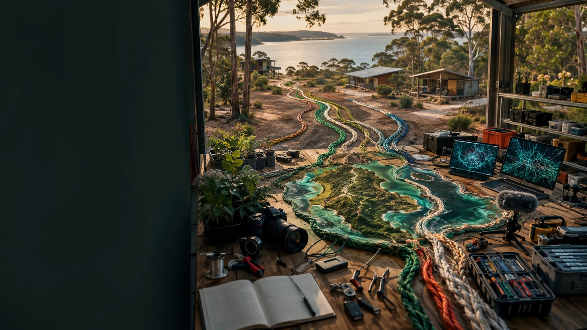

Find the public workbench for the next useful step.
These related projects cover local work, technology, media, making, health research, community wealth and the wider project map.
Project and coordination work
Ready S.E.T. Co-op Cultural Intelligence NodeA focused catalogue connecting local work with culture, computation, digital twins and practical experiments.Open public page ↗
Ready S.E.T. Co-op Trust HubTrust building, shared assets, local work and the proposed 9 Ballow Road public base.Open public page ↗
Project AtlasThe broader public map across community, culture, technology and practical projects.Visit public page ↗
Strange But True Community LedgerA choose-your-own-pathway doorway across public projects and practical tools.Open public page ↗
Place, making and media
Minjerribah Screen & Media NetworkIsland stories, production skills, public screens, training and trusted local information.Open public page ↗
Straddie Maker-Space LabA public proposal for shared tools, repair, practical learning and local fabrication.Open public page ↗
Straddie Tip Loop LabA question-led workbench for lawful recovery, sorting, repair, parts and material learning.Open public page ↗
Straddie Capsule Surge LabA site-neutral concept for compact stays, visiting specialists, shared facilities, local compute and surge planning.Open public page ↗
Ballow Road Sand and Screen HubEarlier detailed research into sand sport, outdoor screen work, small markets, all-ages comfort and a 10 to 12 Ballow Road site option.Open public page ↗
Community Club Builder: Sandy SportsA portable pathway for local participation, volunteering, practical roles and evidence from repeated activity.Open public page ↗
Health and community wealth
Moreton Bay Community Wealth and MutualsA public research doorway for mutual structures, shared assets and locally retained value.Open public page ↗
Aura Health TwinAn early local prototype for longitudinal records linking health, lived experience and place. A separate Software as a Medical Device path is planned but not yet fully developed.Public page in development